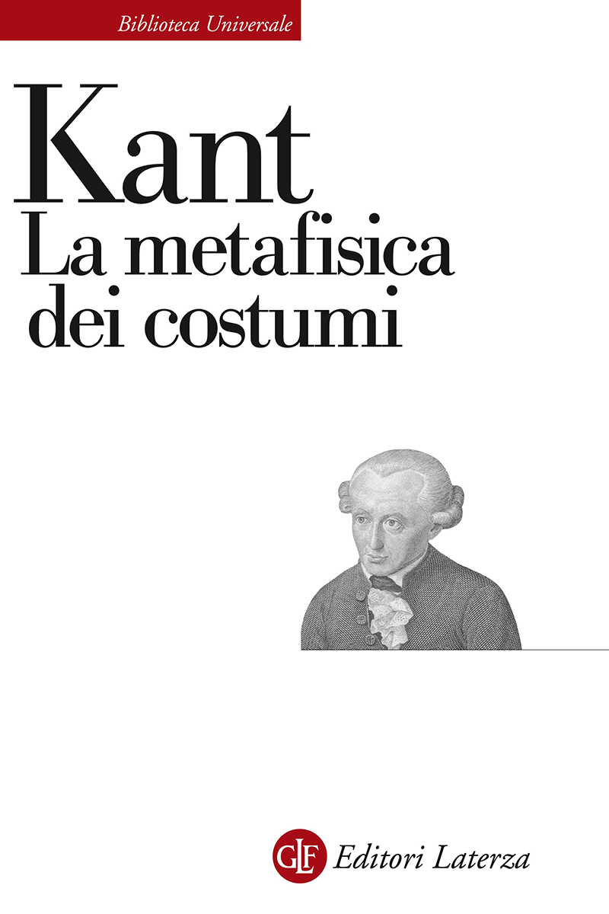
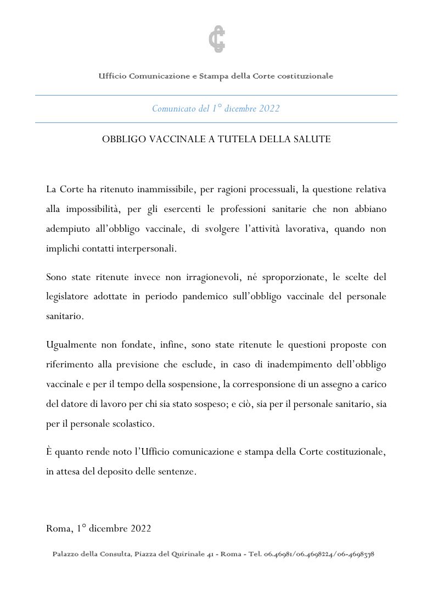

33:53 · 4 OPERE
L'Italia: culla o tomba del diritto?
Il filo del discorso
Il comunicato della Corte costituzionale del 1° dicembre 2022 sugli obblighi vaccinali è il punto di partenza per una critica del rapporto fra diritto, potere e responsabilità individuale. Dr Divago precisa che non sono ancora disponibili le motivazioni delle sentenze, ma considera già il comunicato un segno di subordinazione della cultura giuridica alla politica.
Leggi la sintesi completaRiduci la sintesi
Rievoca il Cile di Pinochet e la continuità di alcuni giuristi tedeschi dopo il nazismo, mostra un opuscolo della DDR e oppone alla semplice obbedienza il problema morale del soggetto. Kant, attraverso la distinzione fra diritto e virtù, sostiene questo passaggio; Petronio e alcuni aforismi introducono poi la denuncia della decadenza contemporanea. Nella parte centrale e finale, il relatore contesta l’inammissibilità della questione sul lavoro sanitario privo di contatti interpersonali, il giudizio di proporzionalità dell’obbligo e il diniego dell’assegno durante la sospensione. La discussione insiste sul linguaggio del comunicato e si chiude con l’esempio di un prezzo al ristorante per contestare il passaggio fra ragionevolezza e fondatezza. La scheda conserva la sua obiezione, ma chiarisce che l’infondatezza riguarda questioni di legittimità costituzionale e non una deduzione grammaticale sulla verità di una politica sanitaria. I paragoni con le dittature, le accuse di condizionamento dei giudici e le conclusioni mediche restano attribuiti al relatore; le sentenze depositate nel febbraio 2023 sono consultate come riscontro successivo, senza attribuirne la conoscenza al video.
I libri nel discorso
NS-Juristen – Auschwitz – Massenmord. Über die Blutschuld der Schreibtischmörder
Note sul riferimento
Copertina: 1965, Dokumente zum Auschwitz-Prozeß, fascicolo II. Fotografia dell’opuscolo con titolo NS-Juristen Auschwitz Massenmord e sottotitolo Über die Blutschuld der Schreibtischmörder, fondo chiaro e fascia gialla. Il catalogo della Fondation Auschwitz registra il gruppo degli ex deportati della DDR quale ente responsabile della raccolta; il fascicolo specifico è registrato nella biblioteca universitaria di Francoforte. Documento prodotto nel contesto della DDR e del processo di Auschwitz, non una ricerca odierna neutrale rispetto alla guerra fredda.
Immagine autentica dell’opera, controllata visivamente; l’edizione di riferimento non è attribuita al filmato.
Titolo tradotto sui giuristi e Auschwitz e sottotitolo sulla colpa di sangue degli assassini da tavolo; data 1965 riscontrata.

La metafisica dei costumi
Note sul riferimento
Copertina: Laterza, Biblioteca Universale Laterza 90, edizione 1983, ristampa 2024, 422 pagine, traduzione e note di Giovanni Vidari, ISBN 9788842022619. Copertina bianca con titolo nero, testata rossa e ritratto di Kant. Originale Die Metaphysik der Sitten, 1797, in due parti uscite dapprima separatamente. Non è la Fondazione del 1785 e non è accertata l’edizione mostrata nel video.
Immagine autentica dell’opera, controllata visivamente; l’edizione di riferimento non è attribuita al filmato.
Kant, titolo e 1797, Rechtslehre e Tugendlehre espliciti; non la Fondazione del 1785.

Obbligo vaccinale a tutela della salute
Note sul riferimento
Comunicato originale: PRIMA PAGINA DEL DOCUMENTO originale, che consta di una sola pagina, datata 1° dicembre 2022, con intestazione dell’Ufficio Comunicazione e Stampa della Corte costituzionale. Il comunicato anticipa decisioni in attesa del deposito delle sentenze; non è esso stesso una sentenza o un libro.
Riproduzione integrale dell’unica pagina del PDF ufficiale; non copertina libraria e non testo delle successive sentenze.
Titolo e tre paragrafi del comunicato del 1° dicembre 2022 discussi espressamente.

Satyricon
Note sul riferimento
Copertina: Newton Compton, Classici Newton Compton 61, testo latino a fronte, 256 pagine, ISBN 9788822766847. Copertina con scena di banchetto, fascia bianca del titolo e verde nella parte inferiore. Edizione dei frammenti conservati: l’indicazione commerciale integrale non implica che il testo antico ci sia pervenuto completo. Nessuna specifica edizione attribuita al filmato.
Immagine autentica dell’opera, controllata visivamente; l’edizione di riferimento non è attribuita al filmato.
Petronio Arbitro e Satyricon richiamati nella polemica sui costumi; nessun episodio o capitolo preciso letto.